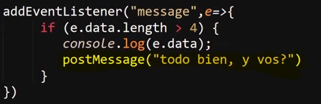

Se trata de un elemento que esta muy estrechamente relacionado con el "event loop", el cual se trata de un servicio interno de los navegadores el cual se encarga de ejecutar los eventos, en otras palabras cada vez que se dispara un evento, en realidad lo que sucede es que se crea una tarea la cual es asignada al "event loop", para que este la ejecute.
El problema esta en que este recurso solo puede realizar una tarea a la vez, por lo cual si se le asigna una tarea pesada o que requiera una buena cantidad de tiempo, como cargar un video no se podran realizar ningun otro evento hasta que la tarea haya sido completada, es decir mientras el video se carga no se podra hacer click sobre un input, escribir, cargar otro elemento.
Para solucionar este tipo de problemas existen los "web workers", los cuales se pueden definir como un nuevo servicio o una asistencia que se puede generar para el "event loop", para que de esa forma se puedan ejecutar tareas en paralelo mejorando de este modo el rendimiento de la paguina.
sin embargo los "web workers" no poseen las mismas capacidades de un documento javaScript normal, en su lugar estos tendra bastantes limitaciones, ya que estos no sera capaz de acceder al objeto global "window", razon por lo cual muchas de la funcionalidades de JavaScrip no seran accesibles, de hecho en la documentación oficial de JavaScrip algunos elemtos indican "disponibles para workers", lo que siginifica que se pueden ejecutar desde estos.
Para la creación de los "web workers" se requiere de la creación de un segundo archivo javaScript, el cual actuara como servicio de asistencia para el "event loop", estos se declaran utilizando la función constructura "new Worker( )", a la cual se le debe pasar la dirección del archivo que sera empleado como worker.
Ejemplo
De este modo el archivo pasara a emplearse como worker lo que permitira que el "event loop" sea más eficiente.
Metodo PostMessage( )
Este metodo perimte enviar mensajes desde el documento principal al web worker y vicebersa, para esto es necesario definir los datos que se desan anviar como parametros dentro de este metodo, de la siguite forma:
Ejemplo
Por ultimo resta que el web worker acceda el dato enviado desde el documento principal, para esto se accede al metodo ".data", lugar en el cual se almacena cualquier parametro que sea recibido por el web worker.
Ejemplo
Resultado
En este ejemplo se envia un parametro desde el documento original hacia el web worker utilizando el metodo "postMessage", lego este es obtenido utilizando un evento "message" y el metodo ".data", para luego imprimir el paramtro en consola.
Una de las limitaciones de los web workers es que no pueden declarar objetos, de hecho para que estos puedan trabajar con ellos es necesario que estos sean enviados como parametros desde el documento original.
Por otra parte en los casos en los que se necesite enviar un dato desde el web worker hacia el documento original nuevamente se utiliza el metodo "postMessage" de la misma forma que se uso anteriormente, respecto al como el documento original accedera al paramtro enviado se realiza de la misma forma ya mostrada, utilizando en escucha para el evento "message" y el metodo ".data":
Web Worker

Documento Original
Resultado
De ese modo se realiza el envio de un parametro al web worker para que sea utilizado en una función, por lo tanto esa actividad se realizara en segundo plano dentro del navegador, de ese modo se podra mantener el "event loop" disponibles para las interacciones del usuario.
Metodo Teminate( )
Este metodo permite cerrar la ejecución del web worker, de ese modo no sera posible que este se ejecute nuevamente una vez este metodo es empleado, este metodo es util ya que los usos más comunes de los web worker no son otros más que realizar la carga de elementos de gran peso o que requieran gran cantidad de recursos, por lo que si se utilizase el "event loop" para ejecutarlos estos pudiesen entorpeser el funcionamiento este.
Ejemplo
De esta forma se puede evitar una segunda ejecución accidental del web worker eliminado el riesgo de una carga inesesaria de estos elementos.
Politica de Origen Cruzado (Same-Origin)
Las dirección de origen de un archivo se trata de la ruta en la que se encuetra en archivo, en el caso de las paguinas web estos suelen estar alojadas en un servidor, una ruta esta constituida por tres elementos indispensables, los cuales son el "protocolo" (ejm: http//), el "host" (servidor ejm: localhost) y el puerto (numero de puerto de conexión ejm:80).
"Same-Origin" se trata de una politica de seguridad aplicada por defecto en los navegadores, la cual se basa en que cietos elementos no pueden ser llamados por otros archivos que posean una dirección de origen diferente a la del archivo llamado, es decir que para que dos archivos se puedan comunicar entre si estos deben poseer el mismo origen, eso implica unmismo "protocolo", "host" y "puerto".
Ejemplo
De este modo si un web worker es llamado desde un archivo que posea un origen diferente a este la conexión sera bloqueda por seguridad, existen formas de desactivar la politica "same-Origin" sin embargo no es algo recomendable ya que se pueden producir muchos errores de seguridad si esta no se implementa.
Nota: esta politica entre en vigencia incluso si el puerto de alguno de los dos archivos es la unica diferencia entre ambos, al menos que el protocolo, el host y el puerto sean exactamete iguales el "same-origin" entrara en acción.
Ejmeplo del mensaje de error que arroja esta politica
Nota: Cuando se utiliza la direcciónrelativa de un archivo el navegador implementa esta politica por defecto.
Parametro Options
Se trata de un objeto que permite definir una configuración para los web workers, posee tres propiedades posibles:
-
type: A esta propiedad se le debe pasar un string, este espesifica el tipo de trabajador a crear. El valor puede ser "classic", el cual se trata del valor por derfecto o "module"
-
Credentials: A esta propiedad se le debe pasar un string, Espesifica el tipo de credenciales que se utilizaran para el worker, los valores pueden ser "omit", "same-origin" o "include" si no se espesifica el valor por defecto es (no se requieren credenciales)
-
name: A esta propiedad se le debe pasar un string, Espesifica un nombre de identificación para DedicatedWorkerGlobalScope, esto representa el alcance del woker que es principalmente util para depuración del codigo.
Nota: Se puede acceder a toda la información relevante sobre este tema desde apartado de Mozilla sobre este tema
Hasta los mometos toda la explicación se a basado en el "Dedicate worker", el cuale se trata del tipo de worker más simple, no obstante existen otros tres tipos de workers, los cuales cuantan con caracteriticas y usos propieos, no obstante estos no se abarcaran en el curso.
Los cuatro tipos de workers son:
-
Dedicate Worker
-
Shared Worker
-
Service Worker
-
Abstrack Worker
Los Ejemplos y explicaciones de este apartado se basan en los Dedicate worker ya que estos se tratan de los workers más simples, los demás tipos de workers tienen sus propias caracteriticas y aplicaciones, sin embargo salvo por el service worker que se desarrollara más adelante no se profundizara mucho más en los workers.